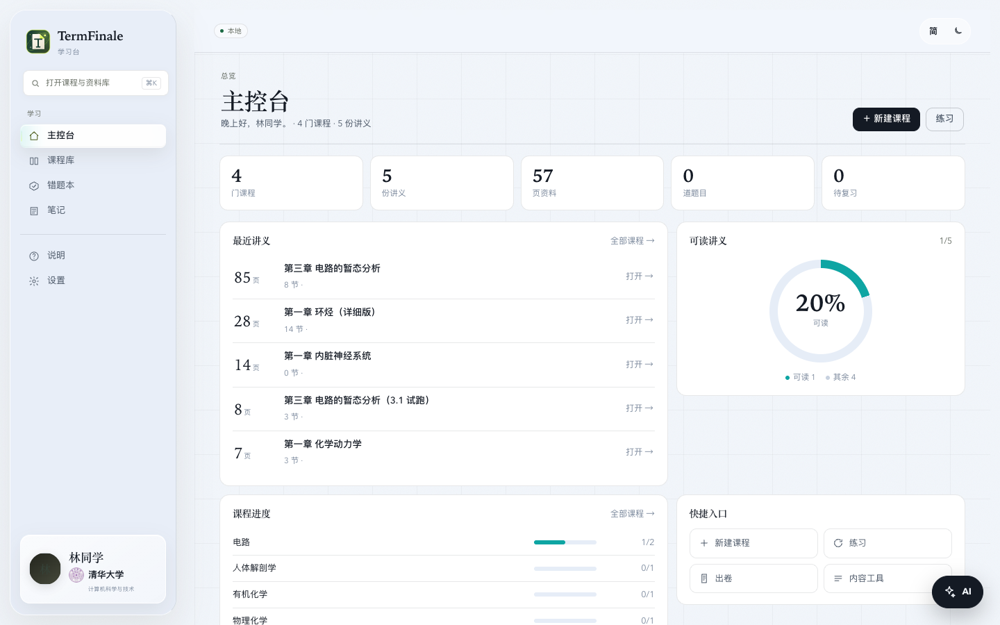
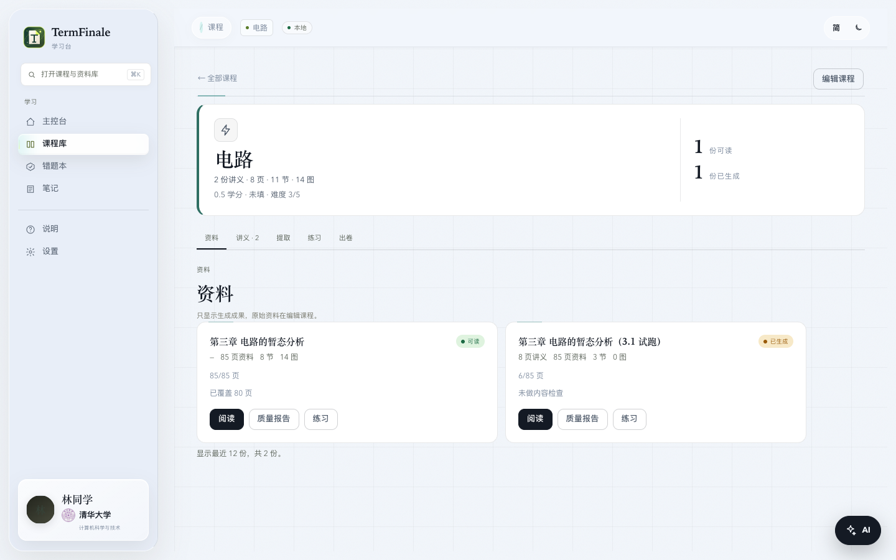
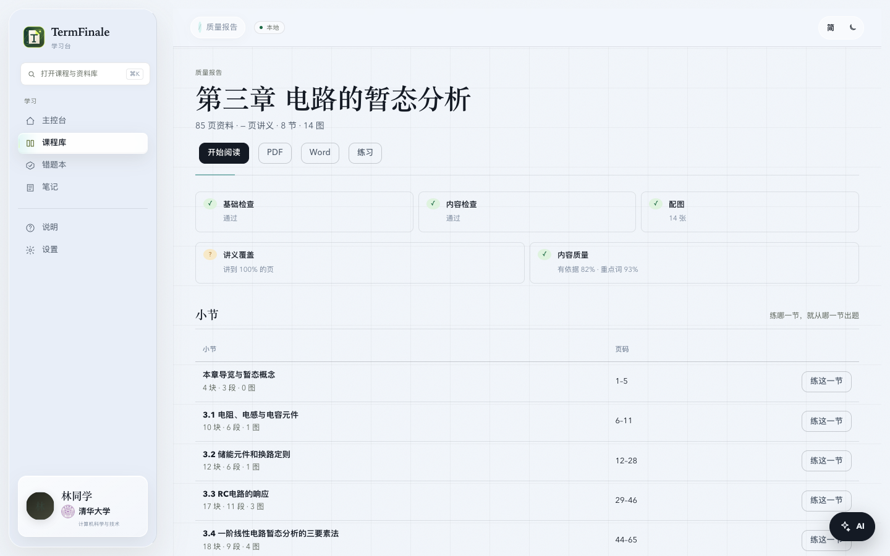

按页生成，每段有出处
讲义正文对应原书页码，能直接翻回教材核对；缺出处的段落会被拦下。
导入 PDF、PPT、Word 或图片，按页生成带原书页码的讲义，再出练习题、错题复习和模拟卷。资料与笔记保存在本机，模型调用使用你自己的 API Key。
正在检查最新版本… · 当前为 Beta，安装包发布后自动更新链接

从资料到讲义、练习、复习、模拟卷，每一步都有出处。
讲义正文对应原书页码，能直接翻回教材核对；缺出处的段落会被拦下。
结构、内容、PDF、语言、逐页覆盖都会检查；没讲到的页会标出来，不假装完成。
扫描件和公式密集页不硬转文字，避免识别错误；文字版 PDF 正常提取。
从讲义或资料页出题，判分带解析和页码；答错自动进错题本，按记忆曲线排期。
按题型和总分组卷；答案审计冲突时整卷退回，不带着错误交付。
基于当前讲义提问，回答带页码引用；简单问题快答，推导类自动深想。
第一次使用大约 5 分钟，之后每次只需选页和生成。
设置 → 模型 → 粘贴 DeepSeek Key → 测试连接。另两个 Key 可选。
新建课程、上传 PDF/PPT，选几页先看 2 页预览，满意再生成整份。
讲义带页码可导出；练习判分进错题本；需要整卷复习时再出模拟卷。
课程页、质量报告、阅读器，都是真实生成的讲义。


Beta 安装包发布在 GitHub Releases，页面会自动指向最新版本。
macOS：Beta 未签名，首次打开需右键 →「打开」。
Windows：SmartScreen 提示时选「更多信息 → 仍要运行」。
软件永久免费，无会员制；模型按量计费，用你自己的 Key。一章约几毛钱，整本教材十几到几十元。
还有问题，去 GitHub 提 Issue 或进群。
需要。DeepSeek Key 必填，用于生成、出题和对话；阿里云百炼与 Kimi 选填。Key 只写入本机 .env，不上传，随时可删。
8 页左右约几分钟，页数越多越久；扫描件还要做 OCR。可以先「快速保存」，把识别推迟到第一次生成。
公式识别可能出错，保留原页影像比强行转文字更可靠；文字版 PDF 不受影响。
资料、笔记、讲义都在本机，但生成和问答需要联网调用模型。
不会。覆盖安装不会动用户数据目录，课程、讲义、笔记和 Key 都保留。